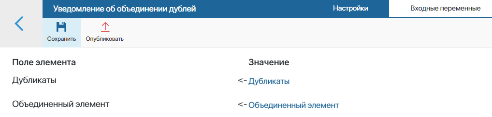

When the search for similar items is enabled in the app, you can create an event handler that will track the merging of duplicates and trigger the necessary actions through a script or business process.
Event handlers are created within custom modules. You can pass to the handler a link to the main item and the record marked as a duplicate, as well as properties from their context.
начало внимание
Only users who are members of the Administrators group can create a module and configure the handler in it.
конец внимание
Example of the event handler tracking the duplicate merge
Let’s consider an example of creating an event handler for CRM workspace apps that have duplicate search enabled.
For example, a user finds two items with the same data and combines them into one record. The added event handler captures this action and starts the process. In the course of the process, the data on the main and merged item is passed using scripts. Then the responsible employee and their manager are sent the task of reviewing the list of merged duplicates.
To configure the handler, perform the following steps:
- Go to Administration > Modules and create a custom module.
- In the module settings, go to the Processes tab and add a business process that will be executed each time after the duplicate records are merged.
For our example, let’s add the Duplicate merge notification process and configure its flowchart as follows:
- In the business process designer, go to the Context tab and add variables to which the handler will pass links to the main item and merged records as a result of merging duplicates:
- Merged Item is a property of the Arbitrary App (One) type.
- Duplicates are properties of the Arbitrary App (Many) type.
- On the Flow Chart tab, place two Script activities and set the functions that will be used to define the main item and its duplicate records.
1. Example of a script for obtaining data on duplicates
async function getDoubles(): Promise<void> { |
2. Example of a script for obtaining data on the main (merged) item
async function getMainElement(): Promise<void> { |
- Since the participants of the process will be determined while it’s executed, create two dynamic swimlanes on the process diagram:
- For employees responsible for the app item.
- For sales reps.
- To allow employees to view the list of duplicates found by the event handler, place Task activities in the swimlanes and add the Merged Item and Duplicates variables to the task forms.
- Save and publish the process.
- In the module settings, go to the Event Handling tab. Add a handler, specifying the name, the event domain: Duplicates, the event: Merge duplicates, and the handler type: Start process.

- On the event handler settings page that opens, specify the process created earlier inside the custom module.
- Click the Input Variables tab and assign data sources for the variables from the process context in the Item Field column. To do this, map them to the event properties.
The Merge Duplicates event has a set of system fields (event ID, deadline, name of the object, author, etc.), as well as individual properties: link to the main item and duplicates. For our example, we need to map the Duplicates and Merged Item variables.

Please note that the Input Variables tab displays properties that are present in the process context at the time the process is bound to the event handler. If the process context has been changed, the new variables will not appear in the handler settings. You have to create and configure the event handler again, binding the same business process to it.
- On the top panel of the settings page, click Save and Publish to activate the event handler.
- Go back to the main module page and enable the module.
Now, when the user merges multiple duplicate items, an event handler will be triggered in the system, which will start the configured business process. The responsible employees and the manager will review similar records in the task form.
Found a typo? Select it and press Ctrl+Enter to send us feedback